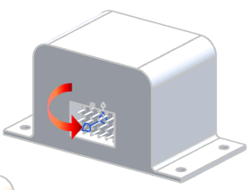
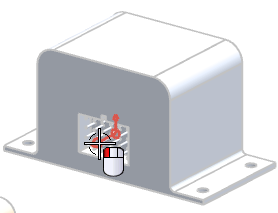
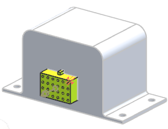

Attach a 24-pin connector to the processor receptacle

-
On the Routing Electrical toolbar, from the Part Drop–down list, select Place Part
 .
.
-
Collapse the Folder View box as you do not need it for this activity. This gives you more room to work.
-
In the Select Existing Part group, click Open
 .
.
All of the connectors you are going to select are the qualified ‘hl’ versions located in the parts directory.
-
In the Part Name dialog box, double-click rte1_hl_24pin_conn.
-
In the Specify Item dialog box, 点击确定。
-
On the left of your Selection bar, from the Type Filter list, select Routing Objects.
-
Select the port on the processor device.

-
In the Part Options group, from the Reference Set list, select PORT.
You also need to lock the connector’s engagement and orientation.
-
In the Part Options group, under Settings, make sure both the Lock Engagement and Lock Rotation check boxes are selected.
-
点击确定。

The connector is placed in your wiring harness subassembly.